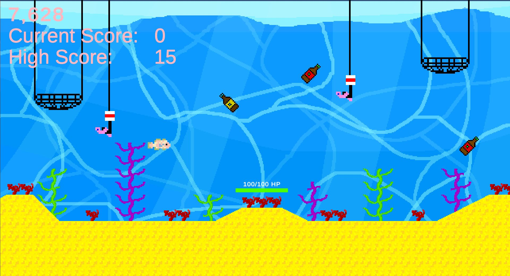
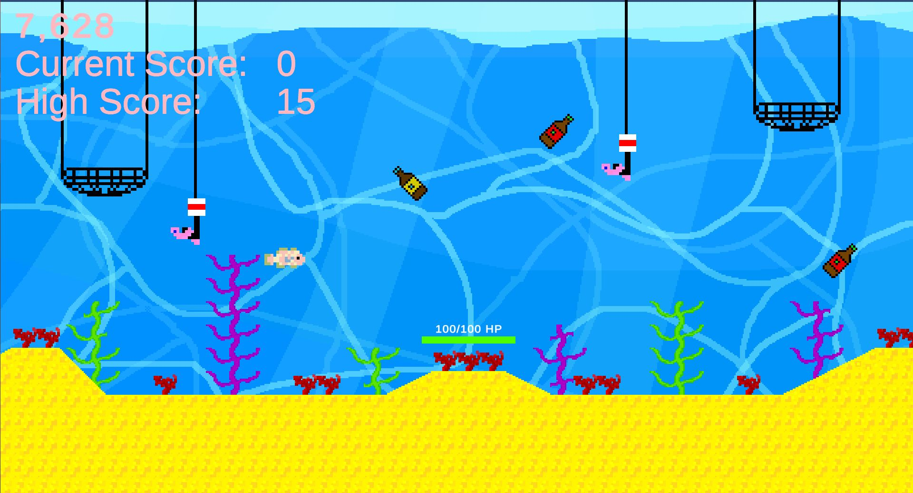

Fishy Business
About:
On July 6th 2023, my second game was released. It is an arcade-style game with levels and an unlimited mode.
This was the first game where I created everything myself; code, music, sprites, etc.
In this game, you are a strong fish who made it his purpose to clean the oceans with his powerful kick to save the coral!
But beware of the nets and fishing rods!
This game was made to spread awareness of conserving the oceans. Overfishing, marine pollution by plastic, and starvation of coral are displayed.
Created by:

Engine:
Made in Unity
Platforms:
Windows, HTML5
Game:
Screenshots:

 

Process:


I started by doing the Unity tutorials; the Essentials, the Creative Core as well as the Junior Programmer course.
I continued learning by watching many, many tutorials on using Unity.
Then I made a level layout and a movable character with updating animations.
I made a collecting system with a current score, a high score, and a timer.
At this point, the base for my platformer (back then) was ready.
Now that I was somewhat comfortable with how Unity and C# work, I decided to focus on the theme of my game, so I made a fish character with different physics than the base character.
It was able to swim instead of walk and jump and wasn’t bound to gravity.
I made custom sprites for my character, the rods, nets, plastic bottles, background, coral reefs, ground, and more.
Then I made the corresponding GameObjects; thus the rods, nets, and bottles, and gave them their behavior; the bottles sink to the bottom, the rods and nets go into the water until a certain height is reached, and stay a couple of seconds, and leave the water again.
All have different spawn rates and speeds. I gave my fish character an attack move, so he could 'kick' the bottles out of the water.
I learned to use Lerp to be able to get the Nets and Rods in and out of the water smoothly and I created Prefabs from most GameObjects to be able to easily use them in other levels as well.
I added controller inputs to attract a wider range of players, created a menu and a welcome, win, and lose screen, and finally a little story, so the player knows what the goal is.
Afterward, I added custom music and sound effects, a second level, and finally an arcade game mode, where the only goal is beating your high score.


After creating the basics of the game, I started letting others playtest my game, gathering feedback, and improving my game.
The first playtester let me know that the random.range of the x-position for the spawn point of the bottles is too much to the right.
I fixed it by moving the float leftestPoint and the float rightestPoint both to the left.

The second playtester found the second level easier than the first level.
Presumably, because the spawnRates of the bottles, nets, and fishing rots stay the same, which means that the same amount of entities spawn over a bigger x-range, which makes it feel empty.
I fixed this by reducing the spawnRates by a second and half a second.


I started making this game by knowing nothing about Unity.
Now I have made a game that I want to improve by processing feedback, adding more levels with new enemies, a boss fight, and a level selection screen that is unlockable after beating the game.
During this project, I developed my skills in Unity, C#, Level Design, Game Design, Prototyping and Gathering and Applying Feedback.
Link:
Download it for free on my Itch page!
Look at this page on your laptop/pc to play or download the Windows version for free on my Itch page!